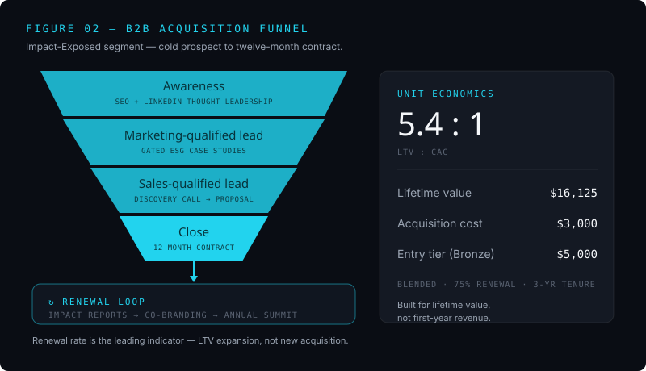

02 / My contribution
From idea to go-to-market
My chapter specified what makes the platform commercially launchable inside its five-year, one-million-dollar endowment horizon: the acquisition funnel, the retention mechanics, and the unit economics.
The B2B acquisition funnel
I built a four-stage funnel for the Impact-Exposed segment — manufacturing, logistics, and agriculture firms under ESG pressure — running from awareness (SEO and LinkedIn thought leadership aimed at CFO, CSR Manager, and Head of Sustainability personas) through to a signed sponsor. I sized it against real search demand using SEMrush: "ESG reporting Australia" returns roughly 1,300 monthly searches at a difficulty of about 47, while "DGR charity partnership" returns around 320 at a difficulty of about 31 — a lower-competition entry point for organic ranking. Closing on twelve-month contracts rather than per-event deals is what makes the economics work.

Retention and lifetime value
The single biggest failure mode is one-off sponsorship, so I engineered retention into the offer: tiered annual contracts (Bronze, Silver, Gold), verified impact reports sponsors can use in their own ESG disclosures, and an annual partner summit at Hillview. Renewal rate becomes the leading indicator — expanding lifetime value on existing sponsors, not chasing new ones each year, is what clears the platform's three-percent GDP-growth benchmark.
The unit economics
Against a customer acquisition cost of about $3,000 and a $5,000 entry-tier sponsorship, blended lifetime value lands at roughly $16,125 — assuming a 75% renewal rate and a three-year tenure — for an LTV:CAC ratio of about 5.4:1. The funnel isn't built to maximise first-year revenue; it's built to maximise lifetime value per sponsor, which is the only basis on which the Hub stays financially defensible across five years.
I stress-tested it honestly
I named the risks rather than burying them. The model assumes a 20% conversion from marketing-qualified to sales-qualified leads; at 10% — plausible for a first-year platform — break-even slips from Year 3 to Year 4 and the endowment carries an extra $80,000 to $120,000. Tightening ESG regulation from the ACCC and ASIC means the verification method has to withstand external scrutiny from launch, not be retrofitted later. Go-to-market isn't one decision; it's a sequence of them, and each one has to earn the next.